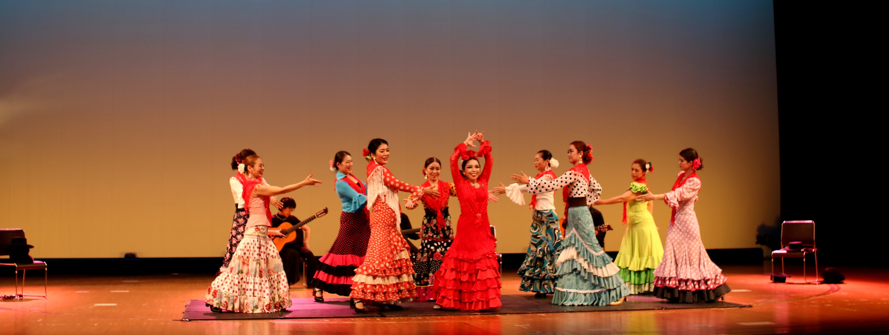

みなさん、はじめまして。マリポッサ・フラメンコ・スタジオ講師のTOMOKOです。
幼少時代から様々な踊りに携わり、フラメンコに出会い、 気がつけばフラメンコの魅力にはまっている自分がいました。
それからは、本格的にフラメンコを学ぶため、本場スペインに！ 現在は、安城市や岡崎市でフラメンコ教室を開きながら名古屋を中心にライブやイベントで精力的に活動しています。
こんなに長く講師生活が続いてるのも、素敵な生徒達さんに出会い支えられてきたからだと実感しています。
About当スタジオについて

愛知県豊田市で活動しているフラメンコ教室です。
豊田市のみならず様々な地域のイベントでフラメンコを披露しています。
Dancer講師

Activity活動内容
ここに説明を入れます。サンプルテキスト。サンプルテキスト。サンプルテキスト。
サンプルテキスト。サンプルテキスト。サンプルテキスト。
ここに説明を入れます。サンプルテキスト。サンプルテキスト。サンプルテキスト。
サンプルテキスト。サンプルテキスト。サンプルテキスト。